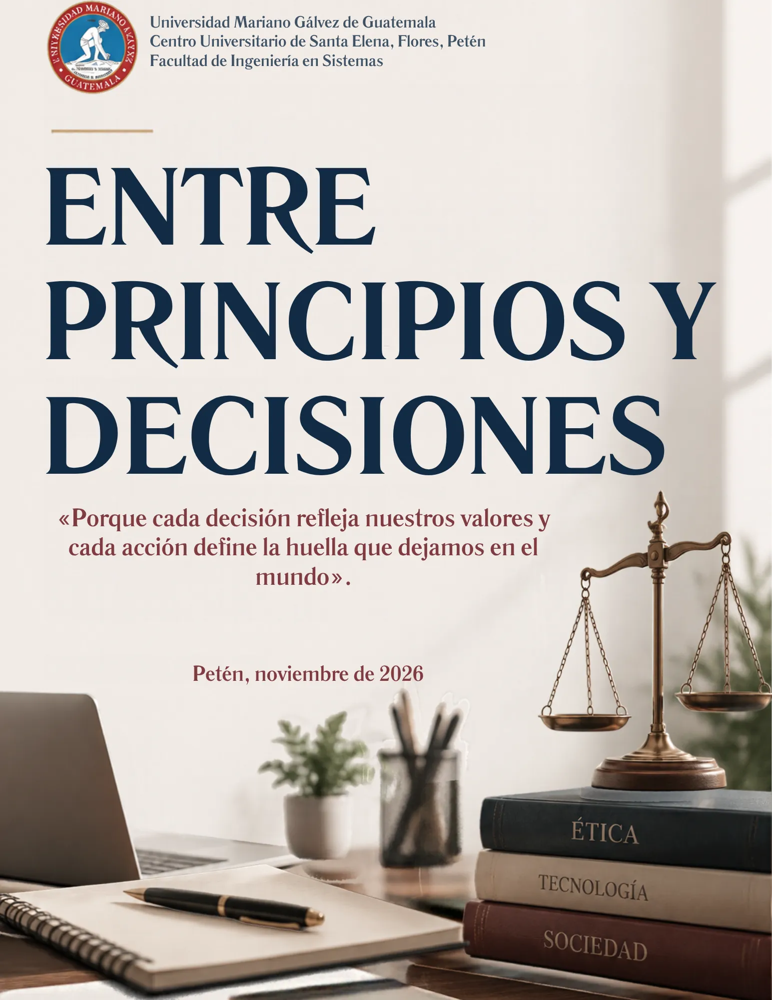

PETÉN, GUATEMALA / EDICIÓN DIGITAL
Entre principios
y decisiones.
Una mirada a los valores que orientan nuestra vida y nuestra práctica profesional.
Abrir la revista71 páginasLectura gratuitaEn tu celular o computadora
Universidad Mariano Gálvez de Guatemala
Centro Universitario de Santa Elena, Flores, Petén
Facultad de Ingeniería en Sistemas

EXPLORA LA EDICIÓNUN ESPACIO PARA REFLEXIONAR
La revista, página a página.
Usa las flechas para avanzar
o elige una página en las miniaturas.
No se pudo cargar esta página.